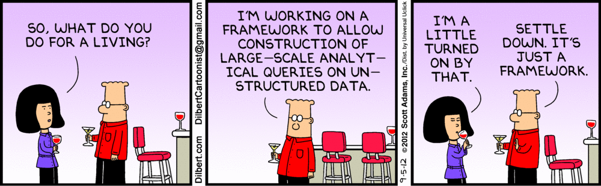
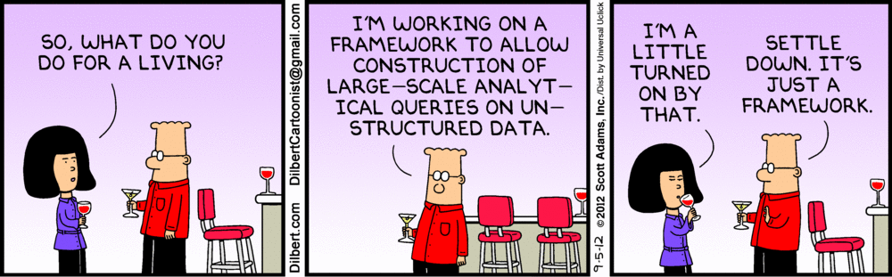

A Brief History
- Created by

- Founders from
 and
and 
- Original mission: PaaS using only open source components
- Problem: no database platform for cloud platforms
- 2009: 10gen releases MongoDB as open source
- The rest is history
Traditional RDBMS vs MongoDB
| RDBMS |
MongoDB |
| Tables |
Collections |
| Rows |
JSON documents* |
| Indexes |
Indexes |
| Joins |
Embedding and linking |
*Mongo calls these BSON objects
Adapted from Sumitkumar Kanoje et al. "Using MongoDB for Social Networking Website" (2015)
BSON - Binary JSON
Types supported:
- strings
- booleans
- integers, doubles (64-bit), dates and floats
- binary data (documents, PDFs, images)
nullObjectIds, BSON objects and arrays
BSON - Binary JSON
BSON elements contain a field name, type, and value.
Json:
{
"hello": "world"
}
- Field name is "hello"
- Type is "string"
- Value is "world"
BSON - Binary JSON
Bson:
\x16\x00\x00\x00
\x02
hello\x00
\x06\x00\x00\x00world\x00
\x00
MongoDB Disadvantages
- Database sizes tend to be bigger (field names stored)
- Querying is less flexible without joins
- Limited transaction support (e.g. sharded clusters)
- Has received funding from US gov't through CIA-sponsored venture capital firm In-Q-Tel
Live demo: mongo shell
- Start with
mongo
- Runs on top of V8 JavaScript engine
Aggregations Make Mongo Sexy

MongoDB Best Practices
- Limit number of query results for reduced network traffic
db.posts.find().sort( { timestamp : -1 } ).limit(10)
- Return only necessary data with projections
db.posts.find( {}, { timestamp : 1 , title : 1 , author : 1 , abstract : 1} ).sort( { timestamp : -1 } )
- Use
$inc for incrementing or decrementing
- Create indexes for improved query response times
Stay tuned for part two:
indexing, replicas and sharding
 


Fork me on GitHub